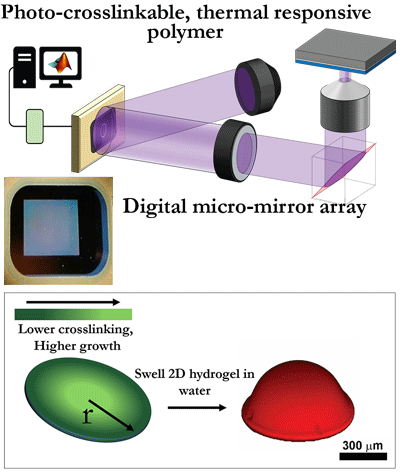
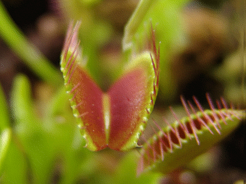
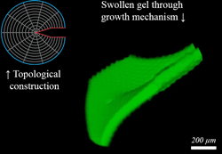

Graduate work (PhD): UMass Amherst, 2011-present
Origami inspired design for active matterI work under a large collabration under the ODEISSI (Origami Design for Integration of Self-assembling Systems for Engineering Innovation) project funded through NSF. The main goal of this grant is to take design cues from origami and combine innovative materials for new active systems.
Gray-scale photo-lithography for shape-programmable hydrogels Extending our protocol of patterning in-homogeneous growth using regions of high and low crosslinking densities in an hydrogel sheet, we use a digital micro-mirror array for projecting a series of photo-masks for arbitrary levels of crosslinking density. By using larger number of crosslinking levels, we obtain tighter control over the final geometries.
I developed a control algorithm for the mirror array, by interfacing it with MATLAB. The C++/ MATLAB script calculates the growth pattern (with desired crosslinking levels), breaks it into a series of masks and finally displays them. A projection lithography setup patterns hydrogel films with UV light with a resulting gray-scale pattern. This method not only improves the accuracies in programmed geometries, but also leads to smoother profiles due to non-discreet patterns. The improved fidelity in programming 3D shapes can be useful in many applications, such as programming flat hydrogel sheets with precise curvatures for contact lens applications.
This study has been published in Soft Matter. The algorithm for controlling the DMD with MATLAB is openly available on github. The code works for Discovery™ 4100 Development Kit (Texas Instrument) and a DLP device from ViALUX GmbH. The C++ library can be obtained from appropriate sources. The algorithm is capable of sharing the library, and loading MATLAB images onto the DMD in a sequence, for pre-determined exposure time.
Please contact me with specific questions regarding usage. Please cite the study, along with github source.
Geometrically controlled instabilities for fast actuators There are beautiful examples across natural systems that use geometric design to bypass, or even surpass the usual mechanical abilities that muscles can provide. Plants (which are not typically known for fast motions) such as the Venus flytrap, and Jewelweed seeds exhibit extremely fast motions using elastic instabilities which are a direct result of their geometry. In the animal kingdom, the fascinating Mantis shrimp and Hummingbird (~10 ms) demonstrate the possibility to harness these instabilities for a hammer-like limb or a snapping beak, resp. At the microscopic level, bacteria have been found to snap helical flagella (~100 ms) for motility. These demonstrate the powerful, and extremely fast mechanism that snap-through instabilities can provide, yet most engineering applications avoid these "catastrophic failures". Studying principles behind these fast motions can throw light on controlling shapes, and allow rapid actuators for robotic applications.
 Instead, our work takes a unique approach of controlling on-demand
instabilities on shell-like structures. To fabricate these complex
geometries, we developed a customized processing technique by
combining reaction injection molding and rapid prototyping. We
report the fundamental mechanics involved with folding a curved
surface, and propose a design rule which allows programming
on-demand, snap-through instabilities on almost any kind of curved
surface (spherical, cylindrical and hyperbolic). Purely geometric in
nature, this design rule enables one to incorporate motions as fast
as the speed of sound independent of length-scale and material
system. The material independence allows ease in implementing the
phenomenon for a variety of processing pathways, and the use of
sustainable materials without additional capital.
Instead, our work takes a unique approach of controlling on-demand
instabilities on shell-like structures. To fabricate these complex
geometries, we developed a customized processing technique by
combining reaction injection molding and rapid prototyping. We
report the fundamental mechanics involved with folding a curved
surface, and propose a design rule which allows programming
on-demand, snap-through instabilities on almost any kind of curved
surface (spherical, cylindrical and hyperbolic). Purely geometric in
nature, this design rule enables one to incorporate motions as fast
as the speed of sound independent of length-scale and material
system. The material independence allows ease in implementing the
phenomenon for a variety of processing pathways, and the use of
sustainable materials without additional capital.
This work has been published, and openly available on (Proceedings of the National Academy of Sciences . The associated news coverage can be found in the Publications link.
Topological defects and in-plane growth mechanism Mechanisms to transform a 2D sheet to a 3D geometry are really useful, as 2D fabrication processes are inherently cheaper and more conventional. These mechanisms find use in packaging, medical and even space industry - as deployable systems conserve space in their flat state. One popular approach for realizing this is to impart controlled, but inhomogeneous growth to thin sheets - forcing them to buckle in 3D. Another method is "cut-and-glue" - cut a wedge out of paper, and roll it into a cone. This is known as topological defect induced curvature, and is well known in the field of crystal defects. We use concepts from differential geometry and crystal defects to establish a mathematical equivalence between the two mechanisms, and validate the same experimentally using growth induced buckling of a photo-patternable hydrogel system.
Our report derives a direct mathematical mapping between these mechanisms, which is then validated experimentally using temperature responsive poly(N-isopropylacrylamide) hydrogels photo-patterned with a growth pattern. The photo-lithography defines regions with highly crosslinked dots embedded in a low crosslinked matrix of the hydrogel, and the mechanical mismatch upon swelling forces the hydrogel to buckle in controlled 3D geometries.
The theoretical work was done in collaboration with Prof. Chris Santangelo (UMass, Physics department).
This study has been published in Soft Matter
Ongoing projects, other interestsI am working on the effect anisotropy on self-assembly by capillary interactions on air-water interface by dynamically tracking the interaction of fabricated elastic anisotropic particles
Bachelors, Masters: Indian Institute of Technology Roorkee (2006-2011)
I did my 5-year Integrated Bachelors and Masters in Polymer Science and Technology at IIT Roorkee. I worked with Prof. Y. S. Negi to make inks based on conducting polymer (polyaniline) for packaging applications.
During my time at IIT Roorkee, I also lead the Photography Club, Graphic design club, and organized a variety of cultural and technical events. I was also in a team for establishing, and designing a campus wide intranet for students.
Short term research: University of Akron (Jan - May, 2011)
I worked with Prof. Sadhan C. Jana at Polymer Engineering, Univ. of Akron for a part of my master thesis titled "Effect of polyhedral oligomeric silsesquioxane on poly(ether ether ketone) coatings" as a short term researcher.
Short term research: Max Planck Institute for Polymer Research (Summer, 2010)
I spent a summer in MPIP studying the contact angle behavior of micro-emulsions during phase transition. Contact angle is directly related to the surface properties, and the more commonly known terms like hydrophobic (like Rainex for car wind-shield) or oleophobic (like the smudge free screen of phones/ tablets). I was in Dr. Doris Vollmer's group in the Polymer Physics division.